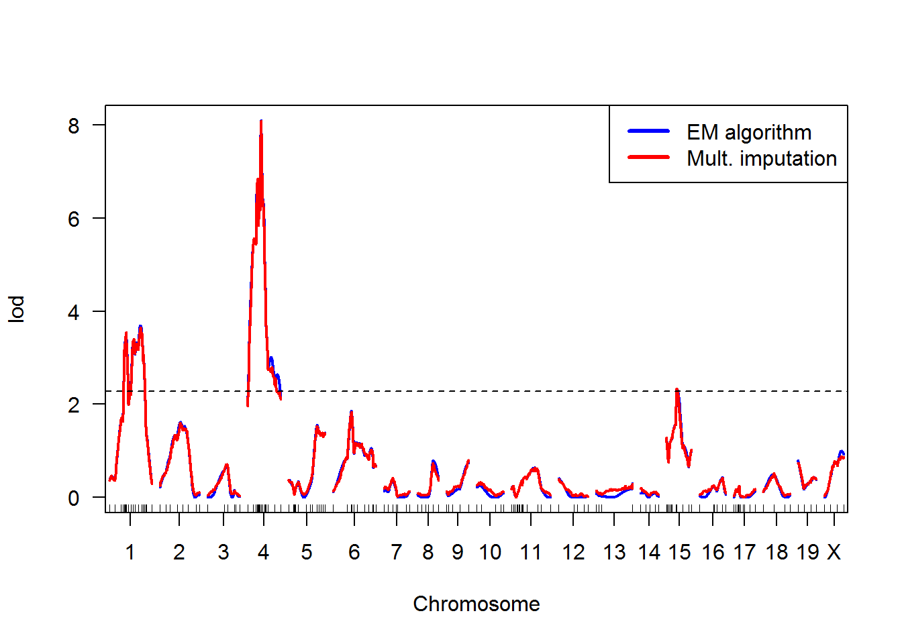

4 Quantitative Genetics
4.1 QTL analysis
Quantitative Trait Loci (QTL) are regions in the genome that are associated with variation in a quantitative trait. Quantitative traits are phentoypes that can be measured on a continuous scale, like height, weight, etc.
QTL analysis (or QTL mapping) is typically done on experimental populations to find genes which contribute to the heritability of traits. Phenotype and genetic marker data are collected from every individual in the population. The general concept of QTL mapping is that we can then calculate the correlation between genotypes and phenotypes at each marker position and test whether they show a statistically significant association.
Let’s consider the famous example of Doebley and Stec (1991), who assessed the variation of traits that discriminate commercial maize from its native relative teosinte. Teosinte is much smaller than maize as we know it today and one teosinte plant produces many ears, each of which has only two rows of seeds. But even though maize and teosinte look so completely different, they are still able to produce viable offspring together. Doebley and Stec (1991) utilized this and crossed the two plant species to produce an F1 generation, which were in turn self-pollinated. The resulting F2 population of maize-teosinte-hybrids showed a wide range of intermediate parental morphologies. Each of the F2 offspring was then genotyped at 58 locations in the genome, so that the quantitative trait information on morphology could be correlated with the genetic map. This analysis revealed that most of the morphological variation between maize and teosinte were the result of changes in only a handful of genes, one of which is the tb1 (teosinte branched 1) gene.
4.1.1 Recombinant Inbred Lines (RILs)
RILs are experimental sister populations that have been produced by a very specific back-crossing scheme. The process is similar to Doebley and Stec’s crossing of maize and teosinte: two homozygous parents are crossed to produce an F1 generation. Following the laws of genetics, each offspring’s genome consists of a random combination of parental alleles and crossover (or recombination) events. Depending on the design, F1 offspring are usually either selfed or mated with a sibling to introduce another level of genetic recombination. The final generation is then inbred for many generations to obtain a collection of homozygous sister lines, each with a unique mosaic genome of parental alleles (Pollard 2012).
4.1.2 QTL analysis in R
4.1.2.1 The “qtl” package
The best established R package for QTL mapping is Broman et al. (2003)’s qtl package. It implements several techniques for finding QTLs, like Hidden Markov Models (HMM), interval mapping, Haley-Knott regression and multiple imputation. It is very well documented and comes with extensive example data and code.
Here, I will introduce you to a basic QTL mapping workflow using the examples given in the package documentation and refer you to more complex analysis options where applicable.
Installation and loading the package
If this is the first time you are using the qtl package, you need to install it from CRAN. The following line of code checks whether you already have the package, and if not installs it.
pkg = "qtl"
if (system.file(package = pkg) == '') install.packages(pkg)You can then load the package:
library(qtl)Loading the data
I will be using the example data on murine hypertension that is provided in the package (Sugiyama et al. 2001). The summary() function shows you the main properties of the data:
data(hyper)
summary(hyper)## Backcross
##
## No. individuals: 250
##
## No. phenotypes: 2
## Percent phenotyped: 100 100
##
## No. chromosomes: 20
## Autosomes: 1 2 3 4 5 6 7 8 9 10 11 12 13 14 15 16 17 18 19
## X chr: X
##
## Total markers: 174
## No. markers: 22 8 6 20 14 11 7 6 5 5 14 5 5 5 11 6 12 4 4 4
## Percent genotyped: 47.7
## Genotypes (%):
## Autosomes: BB:50.1 BA:49.9
## X chromosome: BY:53.0 AY:47.0The plot() function produces plots showing missing genotypes, the marker positions and the distribution of phenotypes or traits. This will give you a first idea of your data.
The package manual includes a description of various additional plotting functions, which I won’t cover here. I also advise to examine each object with head() or summary() after you ran a function to get a feel for your data and the various steps you are taking in the analysis.
plot(hyper)
Genetic map estimation
Before we proceed with the analysis, I typically recommend to replace the existing genetic map with an estimated one to reduce the potential errors. The genetic map represents all markers on a chromosome in a linear fashion. The est.map() function applies a Hidden Markov Model (E. S. Lander and Green 1987) to estimate the map with an assumed genotyping error rate (error.prob).
Here, we can also specify the mapping function (map.function) that we want to use to convert genetic distance to recombination fraction. The distance between two markers is usually given as a unit of genetic linkage, called centimorgan (cM) One cM represents the distance with an average of 0.01 crossover events in one generation (i.e. 1% recombination). However, this representation of distance underestimates the actual recombination fraction, which is inherently not additive. With increasing distance the chance of double crossovers increases, so that they are in a way “invisible” to the traditional estimation of recombination distance.
Another reason why genetic maps based on recombination are biased is crossover interference, which described the phenomenon that a crossover event reduces the likelihood of another recombination event occur close by.
To correct for such biases, we can choose from the following mapping functions:
- Haldane’s is the simplest mapping function and assumes a Poisson distribution for crossover events and does not consider interference.
- Kosambi’s mapping function also considers interference and double crossovers but it can not calculate joint recombination probabilities for more than three loci.
- Carter-Falconer’s mapping function can be extended to more complex interference rates.
- Morgan’s mapping function assumes complete interference.
The two most widely used mapping functions are Haldane’s (the default) and Kosambi’s. For this example, using Haldane’s should be sufficient. Because our example is a backcross, we can assume no interference, meaning that all crossovers are independent (Lynch and Walsh 1998).
newmap <- est.map(hyper, error.prob = 0.0001, map.function = "haldane")
hyper <- replace.map(hyper, newmap)We can now estimate the recombination fractions between all pairs of markers. The est.rf() function also calculates the LOD scores. LOD stands for “likelihood of the odds” and is a measure of linkage. In QTL mapping we calculate LOD scores for the genetic markers and a threshold, above which we consider a QTL statistically significant in its association with the trait.
hyper <- est.rf(hyper)The calc.errorlod() function calculates the genotyping errors according to Lincoln and Lander (1992). We can see which markers have an error LOD above a certain threshold (cutoff) with the top.errorlod() function.
hyper <- calc.errorlod(hyper, error.prob = 0.0001)
te <- top.errorlod(hyper, cutoff = 3)
te## chr id marker errorlod
## 1 4 102 D4Mit288 3.324582
## 2 4 107 D4Mit111 3.262205
## 3 4 216 D4Mit214 3.261092
## 4 11 57 D11Mit82 3.021105
## 5 11 118 D11Mit82 3.021105hyper.clean <- hyper
for(i in 1:nrow(te)) {
chr <- te$chr[i]
id <- te$id[i]
mar <- te$marker[i]
hyper.clean$geno[[chr]]$data[hyper$pheno$id == id, mar] <- NA
}Finding QTLs
Now, we can proceed with the central step: mapping the QTLs.
Because the individuals in QTL studies are genotyped at specific marker locations throughout the genome, we inherently have to deal with the missing information about genotypes between markers. Hidden Markov Models (HMM) can help us overcome this problem by calculating genotype probabilities between markers based on the joint genotype distribution.
We first need to calculate these genotype probabilities using the calc.genoprob() function. We can define several parameters, like step size, the amount of error we want to allow for, the mapping function and step width. Here, we want to calculate genotype probabilities for every cM (step = 1), with a fixed step width and an error probability of 0.0001. As above, we are again using Haldane’s mapping function.
hyper.clean <- calc.genoprob(hyper.clean, step = 1, error.prob = 0.0001, map.function = "haldane", stepwidth = "fixed")The simplest QTL model, we can run is single-QTL marker regression or interval mapping using the scanone() function.
These simple methods can give a good estimation of QTLs but they can also introduce bias, especially with multiple QTL in close proximity. More advanced mapping approaches, like Composite Interval Mapping (CIM) are discussed later on.
The first parameter we want to specify is the phenotype(s) and model (e.g. parametric or non-parametric) for mapping. Here, we want to use the first phenotype, i.e. the first column in our phenotype matrix, which follows a normal distribution. We can see the phenotype matrix by calling:
hyper.clean$phenoThen, we need to specify the mapping algorithm we want to use. We can choose from several options. Here, I will only present the practical implications for each method. For a full discussion of the mathematical principles, see Lynch and Walsh (1998).
- Marker regression: Marker regression is by far the simplest approach to QTL mapping. Here, we calculate the association between phenotype and genotype at each marker position independently.
Because it is so simple, marker regression is seldom recommended to use. With interval mapping, a phenotype ~ genotype association analysis is performed for each flanking marker pair independently. This improves the approximation and gives confidence regions around QTL.
- EM (Expectation-Maximization) algorithm: EM is usually applied to maximum likelihood (ML) analyses of mixed models. It is an iterative process of calculating conditional probabilities and updating the ML estimates. This process is repeated until the estimates converge (E. S. Lander and Botstein 1989). If we have a reasonably dense marker map, the EM algorithm will converge on the global maximum.
- (Extended) Haley-Knott regression: Haley-Knott regression uses a simpler model than the EM algorithm (Haley and Knott 1992). The extended Haley-Knott regression also considers variance is therefore gives improved approximations. Haley-Knott regression can give good approximations of the likelihood profiles for ML interval mapping but with more complex cases, it can be heavily biased.
- Multiple imputation: This method uses multiple rounds of imputing the unknown genotypes between markers and combines them into a final imputation model (Ś. Sen and Churchill 2001). This allows us to perform a simple analysis of variance at each position in the genome. Multiple imputation needs much more computational power than simpler methods and will usually not outperform them with single-QTL models (it is much more advantageous with more complex multi-QTL models, however).
Here, I will show QTL mapping examples for the EM algorithm and for multiple imputation:
# EM algorithm
out.em <- scanone(hyper.clean, pheno.col = 1, model = "normal", method = "em")The multiple imputation method requires the use of the sim.geno() function before we call the mapping function. It calculates the joint genotype distribution based on the available marker information and uses it to perform the imputation of missin genotypes. With the n.draws parameter, we define how many imputations will be run. The more imputations steps we run, the more precise the genotypes but with increasing cost of computational time and power.
hyper.clean <- sim.geno(hyper.clean, step = 1, n.draws = 100, error.prob = 0.0001, map.function = "haldane", stepwidth = "fixed")
out.imp <- scanone(hyper.clean, pheno.col = 1, model = "normal", method = "imp")Now that we have a LOD score for each marker position, we want to know which positions are significantly associated with the phenotype. To determine this, we will use the scanone() function again, but this time we want to calculate the genome-wide LOD score threshold with a permutation test. Above this threshold we can consider a QTL to be statistically significant. Here, I am using a similar call as before, but I am specifying that we want to use 1000 permutations.
operm.imp <- scanone(hyper.clean, pheno.col = 1, model = "normal", method = "imp", n.perm = 1000)## Doing permutation in batch mode ...The summary() function will tell us our genome-wide LOD score threshold for a given significance value (here 0.05).
lod <- summary(operm.imp, alpha = 0.05)
lod## LOD thresholds (1000 permutations)
## lod
## 5% 2.28And now we can also refine our QTL results by including the significance threshold. This will give us the LOD score and estimated p-values for each marker above the threshold, around which we can now assume to have found a QTL for our trait of interest.
summary(out.imp, perms = operm.imp, alpha = 0.05, pvalues = TRUE)## chr pos lod pval
## c1.loc97 1 100.3 3.65 0.00
## D4Mit164 4 41.6 8.08 0.00
## D15Mit152 15 37.3 2.34 0.04Now that we have our QTL, we can plot them with the plot() function. Here, I am plotting the results from both, the EM algorithm and the multiple imputation method. As expected, they do not differ much. The horizontal dotted line shows the genome-wide LOD threshold and our two significant QTL pop up nicely on chromosomes 1 and 4.
plot(out.em, col = "blue")
plot(out.imp, col = "red", add = TRUE)
abline(h = lod[1], lty = 2)
legend("topright", c("EM algorithm","Mult. imputation"), col = c("blue", "red"), lty = 1, lwd = 3)
QTL interaction mapping
Covariates in QTL models
4.1.2.2 QTL Analysis using Bayesian Interval Mapping (“qtlbim” package)
4.2 Gene x Environment interactions
4.3 Variance and heritability
Placeholder
Doebley, J, and A Stec. 1991. “Genetic Analysis of the Morphological Differences Between Maize and Teosinte.” Genetics 129 (1). Genetics: 285–95. http://www.genetics.org/content/129/1/285.
Pollard, Daniel A. 2012. “Design and Construction of Recombinant Inbred Lines.” In Quantitative Trait Loci (Qtl): Methods and Protocols, edited by Scott A. Rifkin, 31–39. Totowa, NJ: Humana Press. doi:10.1007/978-1-61779-785-9_3.
Broman, Karl W., Hao Wu, Saunak Sen, and Gary A. Churchill. 2003. “R/Qtl: QTL Mapping in Experimental Crosses.” Bioinformatics 19: 889–90.
Sugiyama, Fumihiro, Gary A. Churchill, David C. Higgins, Conrado Johns, Konstatinos P. Makaritsis, Haralambos Gavras, and Beverly Paigen. 2001. “Concordance of Murine Quantitative Trait Loci for Salt-Induced Hypertension with Rat and Human Loci.” Genomics 71 (1): 70–77. doi:http://dx.doi.org/10.1006/geno.2000.6401.
Lander, E S, and P Green. 1987. “Construction of Multilocus Genetic Linkage Maps in Humans.” Proceedings of the National Academy of Sciences 84 (8): 2363–7. http://www.pnas.org/content/84/8/2363.abstract.
Lynch, M., and B. Walsh. 1998. Genetics and Analysis of Quantitative Traits. Sinauer. https://books.google.de/books?id=UhCCQgAACAAJ.
Lincoln, Stephen E., and Eric S. Lander. 1992. “Systematic Detection of Errors in Genetic Linkage Data.” Genomics 14 (3): 604–10. doi:http://dx.doi.org/10.1016/S0888-7543(05)80158-2.
Lander, E S, and D Botstein. 1989. “Mapping Mendelian Factors Underlying Quantitative Traits Using Rflp Linkage Maps.” Genetics 121 (1). Genetics: 185–99. http://www.genetics.org/content/121/1/185.
Haley, C S, and S A Knott. 1992. “A Simple Regression Method for Mapping Quantitative Trait Loci in Line Crosses Using Flanking Markers.” Heredity 69 (4). The Genetical Society of Great Britain: 315–24. doi:http://dx.doi.org/10.1038/hdy.1992.131.
Sen, Śaunak, and Gary A. Churchill. 2001. “A Statistical Framework for Quantitative Trait Mapping.” Genetics 159 (1). Genetics: 371–87. http://www.genetics.org/content/159/1/371.